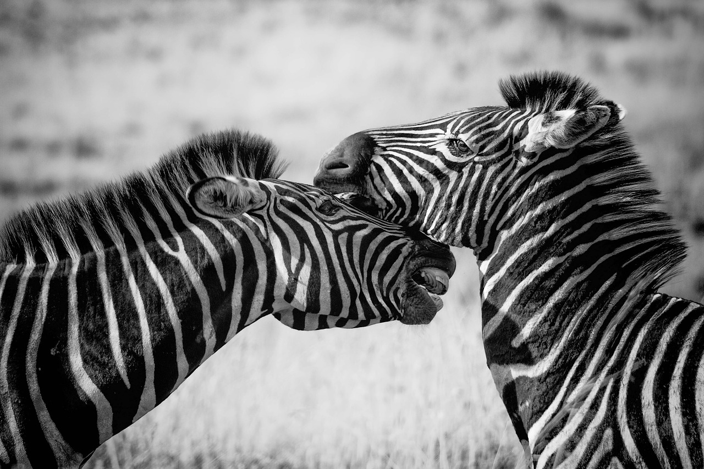
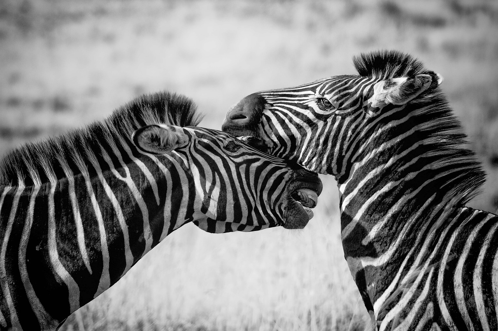

In my mind I visualize a detail. The view and the sensation will appear in a print. If it excites me, there is a good chance that it will make a good photograph. It is an intuitive sense, a capacity that comes from a lot of practice.
 
